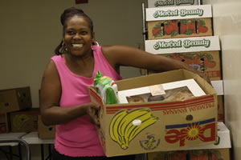
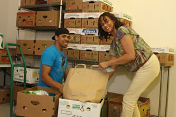
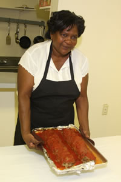
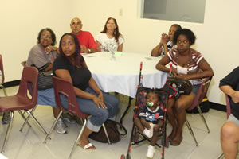

BFCS Food and Nutrition Services Program
Providing food boxes, infant supplies, cleaning supplies
and training classes for families that qualify
Black Family and Child Services is now accepting applications from families that need assistance with providing nutritionally balanced meals, hygiene items and diapers for their children.
In partnership with St. Mary’s Food Bank Alliance and Fry’s Food and Drug Stores, BFCS operates its Food and Nutrition Services 52 weeks a year from its main office on Southern Avenue.
All applications will be screened, and qualifying families will be added the the agency's waiting list. Qualifying recipients will be able to accept one food box per month.
To apply or for more information, contact Black Family and Child Services at 602.243.1773.
Your donations are needed
Your donation of new, unopened packages of the following are needed to help families in distress:
• Soap
• Toothpaste
• Toothbrushes
• Grooming supplies
• Diapers
• Baby formula
• Cleaning supplies
• Children’s pajamas
To donate today, bring your gift to:
Black Family and Child Services of Arizona
1522 East Southern Avenue
Phoenix, AZ 85040
Or, if you would like to make a cash contribution, Donate Now.
Volunteers are needed, too
The BFCS Food and Nutrition Program provides a variety of lectures, workshops and training classes. Volunteers are needed to operate and present these exciting programs. Please contact BFCS at 602.243.1773 if you would like to provide any of the following services:
• Assemble and Distribute Food Boxes
• Present Nutritional Workshops (i.e. childhood obesity, diabetes, hypertension)
• Present Food Preparation Demonstrations

Food boxes are distributed to BFCS clients every Thursday.

Volunteers are needed to assemble and distribute food boxes.

BFCS is seeking volunteers to demonstrate ways to prepare healthy meals.

Guests at food preparaton workshops learn ways to prepare healthy meals, and get to enjoy the meals after they're prepared!